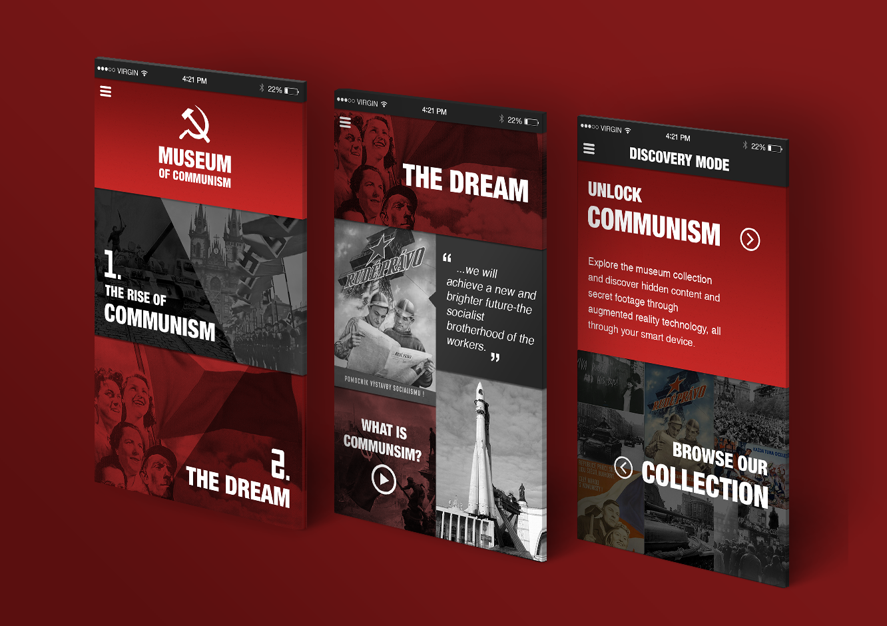
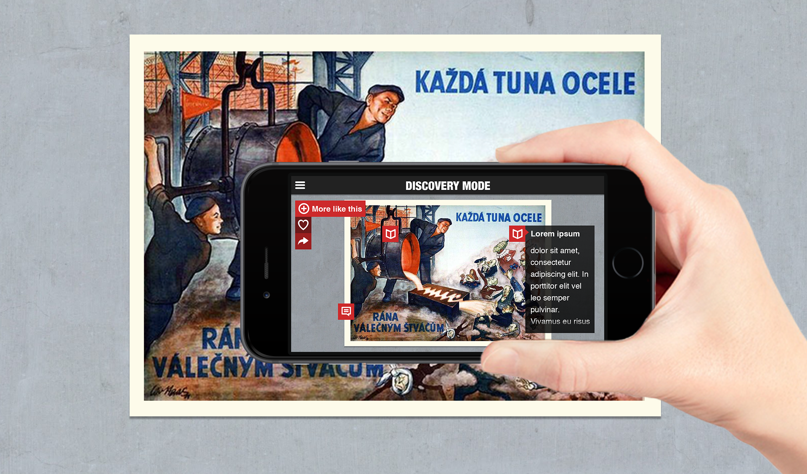
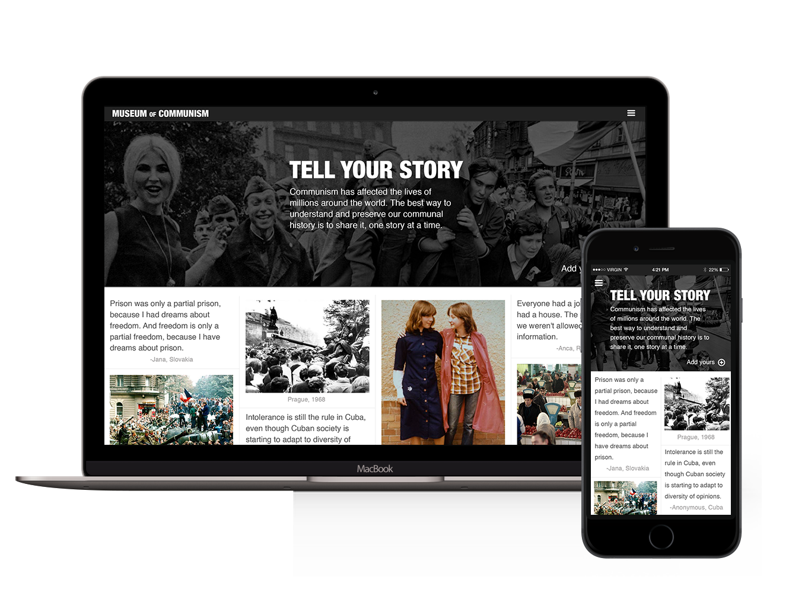

The Problem
How can you tell the story of Communism in The Czech Republic while connecting to the Czech people and Prague itself.

The Why
A project given to me while working at Y&R Prague, I was tasked with studying the existing museum through on-site research and interviews. I realized that the current museum was overcrowded and didn't accomidate it's largely international visitors, but perhaps more importantly, didn't connect to the people of Prague.
The Application
Mapped to the sections of the museum, the application works with the physical content to create an interactive second layer of material including video and first hand accounts, allowing users to create their own experience based on their interests and knowledge, customized for many of the major languages of museum visitors.
The Application
Mapped to the sections of the museum, the application works with the physical content to create an interactive second layer of material including video and first hand accounts, allowing users to create their own experience based on their interests and knowledge, customized for many of the major languages of museum visitors.
The Goals
Update the museum’s tech to accommodate different visitor types
Reorganize and restructure exhibits to emphasize the narrative “The Dream, the Reality, the Nightmare”
Provide a place for dialogue and sharing experiences
The Audience
Group One
Who: Families and small groups with a large spread in ages. Mostly unfamiliar with communism.
Visit by chance
Needs: engagement, feeling of discovery, drama, little reading, reward
Group Two
Who: Older tourists with interest in history and/or prior knowledge of communism.
Visit is planned
Needs: investigation, advanced information, more willing to read, additional material, unique insights

Augmented Reality
Exhibits and displays become platforms for exploration in the app’s Discovery Mode. Unlock additional information, translations and video content by simply scanning with your smart device. Easily find similar material, favorite, and save items to share. Find hidden content representing the underground dissent towards the Communist regime.

Conversation
The Czech people hold thousands of valuable pieces of history through their stories, the little anecdotes that come up naturally in conversation. Culturally, these stories are more important than the laws and the legends of the communist time, they represent the real day-to-day lives of the people who call Prague their home. By using the museum as a platform for conversation, we can collect and preserve these stories and create a full image of the recent past.